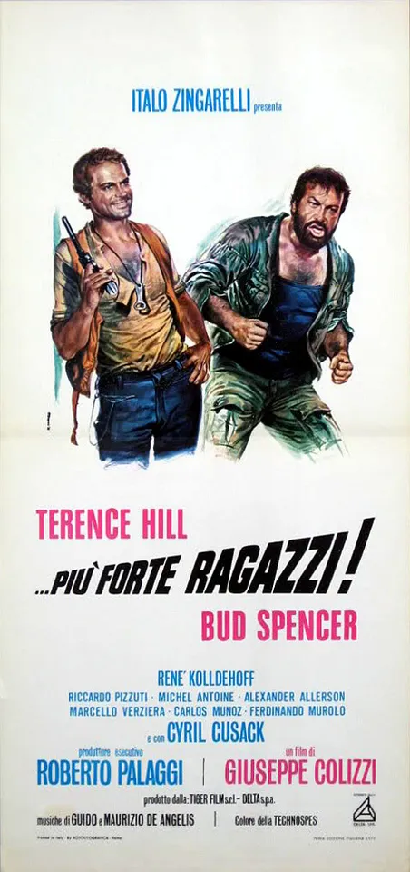

1972 · 23 tracce
Musiche di Guido e Maurizio De Angelis.
Elenco dell’edizione indicata; comprende versioni discografiche e alternative. Non costituisce un elenco certificato di ogni inserto musicale nel montaggio del film.
Gli elenchi documentano le edizioni pubblicate; la presenza di ciascuna traccia nel montaggio del film non è certificata.
Brani e ascolti
- 01
Flying through the air
2:58SpencerHillDuo
- 02
Plata and Salud
4:49ITA MUSIC
- 03
Scambio di opinioni
1:46ITA MUSIC
- 04
Plata and Salud
0:56ITA MUSIC
- 05
Bossa
2:17ITA MUSIC
- 06
Scambio di opinioni
1:49ITA MUSIC
- 07
Bucefalo
2:38ITA MUSIC
- 08
Plata and Salud
2:07ITA MUSIC
- 09
Il matto
1:41ITA MUSIC
- 10
Scambio di opinioni
2:35ITA MUSIC
- 11
Il ballo
2:21Video non identificato · collegamento a una ricerca
- 12
Salud all'aereoporto
2:03ITA MUSIC
- 13
Gli amici
3:48ITA MUSIC
- 14
Valzer fra amici
2:03ITA MUSIC
- 15
Scambio di opinioni
1:55ITA MUSIC
- 16
Samba
1:52ITA MUSIC
- 17
Il matto
1:28ITA MUSIC · Stesso tema · variante non confermata
- 18
Morte del matto
1:38ITA MUSIC
- 19
Scambio di opinioni
1:25ITA MUSIC · Stesso tema · variante non confermata
- 20
Scambio di opinioni
2:11ITA MUSIC · Stesso tema · variante non confermata
- 21
Scambio di opinioni
2:39ITA MUSIC
- 22
Flying through the air
2:57SpencerHillDuo
- 23
Flying through the air
2:54SpencerHillDuo
Fonti e riferimenti
- Scheda del film e creditiConsultata il 3 ottobre 2026.
- Edizione e lista delle tracceConsultata il 3 ottobre 2026.
- Locandina — ...più forte ragazzi!Consultata il 3 ottobre 2026.